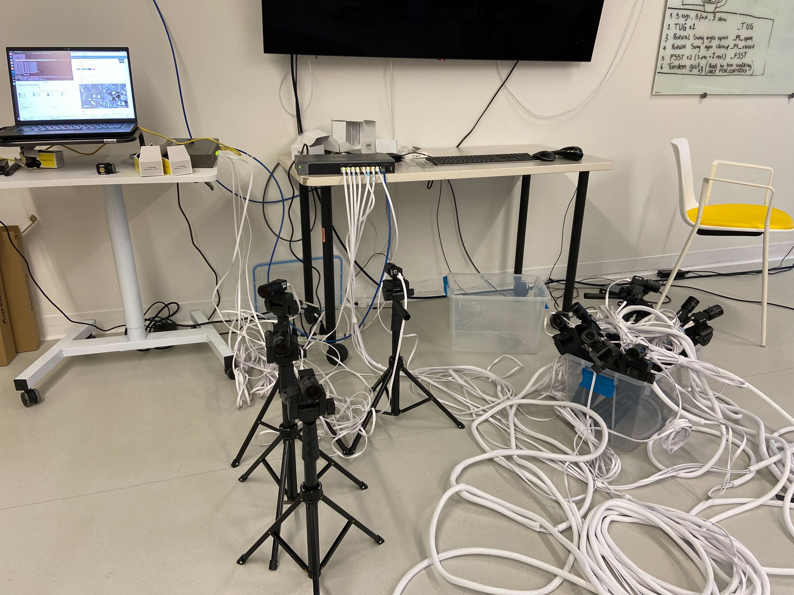
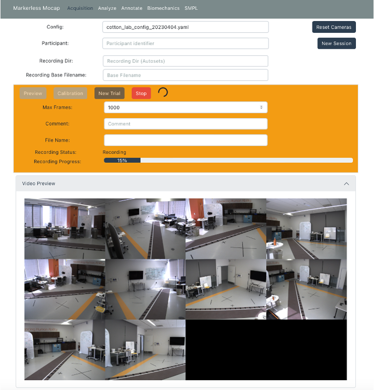
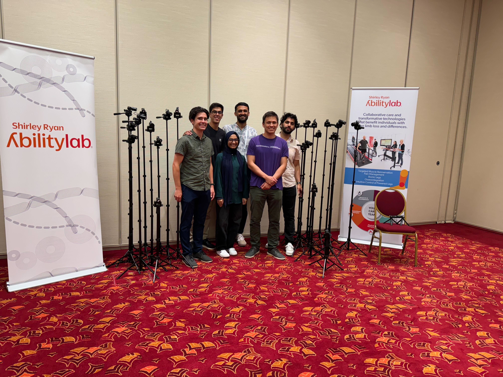

An overview of the multi-camera markerless motion capture (MMC) system I developed in the Intelligent Sensing and Rehabilitation Lab (ISR).
Overview
In the ISR, a significant focus of our work is video-based movement analysis. As the primary developer over the past two years, I have transformed the MMC from a 2-camera setup that could only record a limited number of frames, to a robust, easily-deployable system that can record from up to 12 cameras continuously.
Thus far, the MMC System has been used in the following publications:

Core Acquisition API
The MMC system utilizes a set of FLIR Blackfly GigE cameras , connected over an Ethernet network and synchronized using the IEEE1588 protocol. I built a custom Python API to control the cameras, using multi-threading to efficiently capture and save images in real-time. The system records at 30 FPS, with the cameras staying synchronized to within 1 ms of each other.

User Interface and Deployment
To make the system easy to use, we created a web application to replace the original terminal interface. The front end uses React and the backend uses a RESTful API to facilitate communication between the acquisition API and the front end. To simplify and standardize deployment, I containerized the system using Docker. Additionally, I have been adding integration tests to prevent regressions as the system evolves.

Current State and Future Development
The MMC system has been permanently installed in 4 locations in the Shirley Ryan AbilityLab, and we have collaborators at Northwestern University, Baylor College of Medicine, and Columbia University using the system. Additionally, I was able to build a fully portable MMC system that can run from a laptop. We have used this mobile system to collect data at 2 conferences where we recorded almost 200 participants performing a set of 18 standardized tasks. In the hospital, we have recorded data from over 400 participants. Finally, I recently submitted a grant proposal to the NIH to further develop the MMC system. The main goals of the grant are to open-source the system, streamline the deployment of the acquisition system and analysis pipeline, and create a FAIR-compliant data layout.